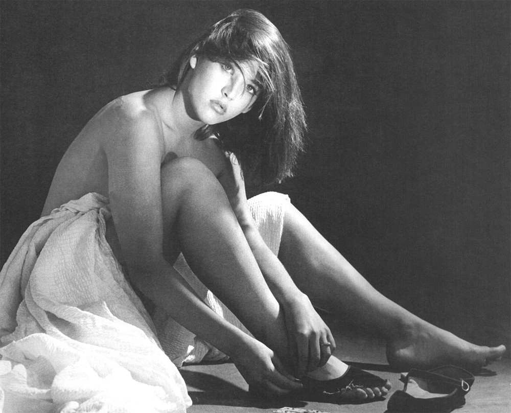

————French kiss
In 1984, Sophie was 18 years old and began working with Andrzej Żuławski, a 16-year-old Polish-born director. She was 26 years old and had a son Vincent (June 1995 ~), living in Paris and Warsaw.
In 2001, Sophie and American producer Jim Lemley love, has a daughter Juliette (2002 ~, was born in London).
In 2007, Sophie and French compatriot Christopher Lambert fell in love in 2014, broke up peacefully.
Sophie was born in 1966 in Paris, France, formerly known as Sophie Danièle Sylvie Maupu, father Benoît Maupu is a truck driver, mother Simone Morisset is a retail clerk, his family in general.
French men hailed as "always loved" Sophie Marceau, with a pair of clear, melancholy brown eyes, is the pair of big eyes to the world dumping.